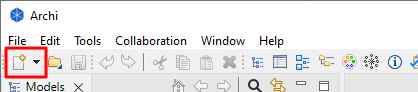
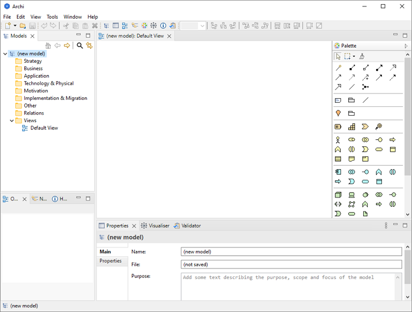

要在Archi中创建一个新的空白ArchiMate模型，请执行以下操作：
从“文件->新建”主菜单或主工具栏上的按钮中选择“空模型”：
“新建”按钮
一个名为“（新模型）”的模型将被创建并显示在 模型树窗口中，其中“默认视图”打开并带有空白的绘图画布和调色板：
已创建新模型的默认Archi工作区
请注意，模型默认命名为“（新模型）”。您可以通过直接在模型树中重命名它或在模型树中选择它并在属性窗口中编辑名称来更改它。您也可以在属性窗口中添加一个“目的”来描述模型的目标和目的。
另请注意，已为模型自动创建一个“视图”并命名为“默认视图”，并放置在模型树的“视图”文件夹中。如果视图未打开（即在空白绘图画布和调色板中可见），您可以通过在模型树中双击它来打开它。这样做将打开右侧的视图（图表）编辑器。如果您想重命名视图，只需在模型树上选择它并在属性窗口中编辑名称。
模型窗口可以显示多个模型树，这意味着您可以同时处理多个模型。
进行更改后，树中模型上出现的星号表示此模型已更改，但尚未保存更改。